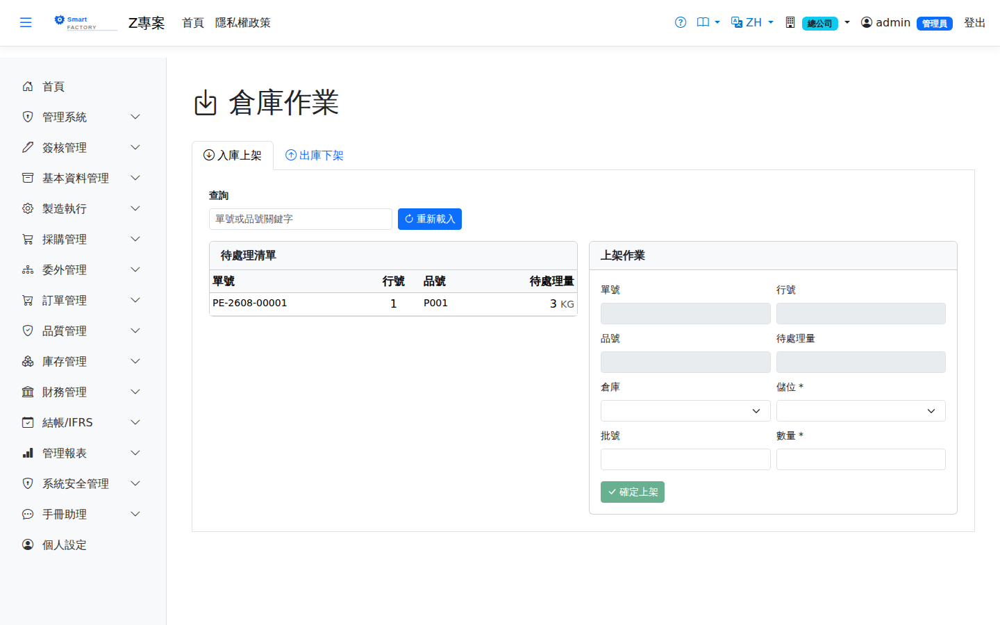

倉庫作業Warehouse Operations
路由：/WarehouseOps | 倉管人員統一執行台（上架/揀貨）Route: /WarehouseOps | One execution desk for warehouse staff (put-away / picking)
倉管人員的統一工作台：彙整所有已確認待執行的單據（進貨上架、發料/出貨揀貨、調撥等），逐儲位輸入實際執行量。每次儲存即寫入庫存異動並更新庫存（同一交易），行全部執行完畢後來源單據自動過帳。支援行動裝置掃碼作業。A single workbench for warehouse staff: it gathers every confirmed document waiting to be executed (receipt put-away, issue and shipment picking, transfers …) and takes the quantity actually handled at each location. Each save writes the stock movement and updates the balance in the same transaction, and the source document posts automatically once all lines are done. Barcode scanning on mobile devices is supported.

倉庫作業畫面截圖（示意，實際欄位/資料依權限與查詢條件而異）Warehouse operations screenshot (illustrative; actual fields and data vary by permission and query criteria)
作業流程Process
執行Execute
1
在待辦清單選擇單據，開啟儲位明細。Pick a document from the to-do list to open its location detail.
2
入庫：選/掃目標儲位輸入上架量；要直接裝箱時在「裝入箱號」掃空箱，批號留空由系統產生新批號，上架後箱子就綁到這一批；出庫：畫面顯示各儲位在手量，輸入揀貨量；整箱出庫可在上方「掃箱號」欄掃箱子的 QR，系統把該箱批號的數量直接填進對應的儲位列。Receipts: choose or scan the target location and enter the put-away quantity; to put it straight into a box, scan an empty box into "Fill box" and leave the lot blank so the system creates a new lot, and the box is linked to that lot on put-away. Issues: the screen shows the on-hand quantity per location, and you enter the picked quantity; to issue a whole box, scan the box QR into the box field above the list and the box's lot quantity is filled into the matching location rows.
3
儲存即過帳該筆明細；全部行完成後單據自動轉「已過帳」。Saving posts that line; once every line is done the document turns to "Posted".
欄位說明Field reference
待辦清單欄位To-do list fields
| 欄位Field | 說明Guide |
|---|---|
| 單號Doc No | 待執行的來源單據（進貨、發料、出貨、調撥等）Source documents waiting to be executed (receipts, issues, shipments, transfers …) |
| 行號Line | 該單據的明細行序號；同一單據的不同料件分行執行Line number within the document; different items on the same document are executed line by line |
| 品號Item | 本行要上架或揀出的料件Item to be put away or picked on this line |
| 待處理量Pending Qty | 該行尚未執行的剩餘數量；歸零後該行完成Quantity on the line still to be executed; the line is complete when it reaches zero |
儲位明細欄位Location detail fields
| 欄位Field | 說明Guide |
|---|---|
| 倉庫 / 儲位WH / Location | 入庫為上架目標位置（可自行選擇或掃碼）；出庫為系統列出的可揀位置For receipts it is the target put-away location (chosen or scanned); for issues it is the pickable location listed by the system |
| 批號Lot | 批號管制品的批次；入庫需指定，出庫依先進先出建議Lot for lot-controlled items; required on receipt, suggested by FIFO on issue |
| 在手量On Hand | （出庫）該儲位／批號目前的在手量，也就是這次最多能揀的數量。預留記在「廠 × 品號」、不分儲位，所以這裡不扣預留；全廠還剩多少可用請看「庫存餘額」上方的品號彙總(Issue) Current on-hand quantity in that location and lot, which is the most you can pick from it. Reservations are kept per plant and product, not per location, so they are not deducted here; see the product summary at the top of Inventory Balance for what remains available plant-wide |
| 下架量Pick Qty | （出庫）本次實際揀出的數量(Issue) Quantity actually picked |
| 上架量Put-Away Qty | （入庫）本次實際上架到該儲位的數量(Receipt) Quantity actually put away into that location |
相關畫面Related screens
注意：Note:出庫遇「庫存已變動」提示表示他人同時異動了同儲位，請重新查詢後再送出。 A "stock has changed" message on an issue means somebody moved the same location at the same time; query again and resubmit.